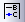

FAQ-158 Wie verberge ich Legenden der verborgenen Zeichnungen?
Letztes Update: 04.02.2015
Hide-hidden-plot-legend
Nachdem Sie einige Zeichnungen in einem Diagramm verborgen haben, können Sie auch die zugehörige Zeichnungslegende verbergen. Für eine verständlichere Erläuterung soll zunächst die Zeichnung selbst verborgen werden. Nehmen Sie an, Sie haben mehrere Zeichnungen in einem Diagramm.
Methode 1:
- Klicken Sie doppelt auf das Diagramm, um den Dialog Details Zeichnung zu öffnen. Deaktivieren Sie im linken Bedienfeld die Kontrollkästchen einiger Zeichnungen. Die ausgewählten Zeichnungen werden verborgen.
- Markieren Sie die Diagrammlegende und klicken Sie auf Legende: Legende aktualisieren..., um den Dialog Graph Manipulation: legendupdate zu öffnen.
- Wählen Sie Rekonstruieren in der Auswahlliste Aktualisierungsmodus.
- Stellen Sie sicher, dass das Kontrollkästchen Legende nur für sichtbare Zeichnungen zeigen aktiviert ist. Klicken Sie auf Anwenden und dann auf OK, um den Dialog zu schließen.
Methode 2:
- Befolgen Sie die gleichen Schritte wie in Methode 1.
- Drücken Sie Strg+L (oder klicken Sie auf die Schaltfläche Neue Legende  in der Symbolleiste Diagramm), und die Legende der verborgenen Zeichnung wird ausgeblendet.
Hinweis: Diese Methode ist nicht auf Boxdiagramme anwendbar.
Schlüsselwörter:Legende, Zeichnung verbergen
Origin-Version mind. erforderlich: 2015 SR0